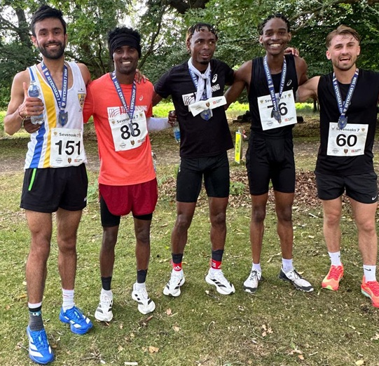

Senior course
Opens with the climb club members know from Tuesday nights. Rolls out past Knole House, then the long drag before a downhill finish with deer and supporters either side.

Our own race: seven miles of grass and paths through the park, plus a free junior 3.5k. Next edition: July 2027.
The Sevenoaks 7 is staged by Sevenoaks Athletics Club each summer in Knole Park. Local knowledge counts as much as fitness: hills, deer, and a last kick down to the finish.
There is a seven-mile senior race on mixed grass and paths, and a free 3.5k junior race for 9 to 15 year-olds on undulating park paths, the same morning.
The 2026 race was on Sunday 12 July: 164 runners, more than ten teams, and a full volunteer crew from the club. Entry for 2027 will be through Nice Work when it opens.

Senior seven miles and the junior 3.5k, both in Knole Park.
Opens with the climb club members know from Tuesday nights. Rolls out past Knole House, then the long drag before a downhill finish with deer and supporters either side.
9 to 15 year-olds, undulating paths within the park, same morning as the senior race. Under-16 and under-12 races for boys and girls.
The race is staged with Nice Work. Affiliated clubs score for the Kent Grand Prix when it is a Grand Prix fixture. Entry for 2027 will be linked here when it opens.
Marshals, course crew and the finish team make the day. If you can help in 2027, get in touch — we always need extra hands on the park.
Shamil Mohammed won in 39:58. First Sevenoaks AC man home was Jake Mears in 42:13. Ellie Grant was first woman in 52:23. Junior winners: George Radu, Jasmine Stephens, Magnus Cheeseman and Beth Barclay.
The Sevenoaks 7 is a race where local knowledge matters as much as fitness, writes Jake Mears. With over 10 teams, 164 participants, and a strong volunteer presence across the course, this race had all the ingredients for an intense local battle.
Shamil Mohammed won in 39:58 for Running Charity. Jake Mears was first Sevenoaks AC man home in 42:13. Ellie Grant was first woman in 52:23.
The free junior 3.5k for 9 to 15 year-olds was won by George Radu and Jasmine Stephens (under 16) and Magnus Cheeseman and Beth Barclay (under 12).
Thanks to Sarah Philpott and Maria Ashlee as course manager and head marshal, to every volunteer, and to Nice Work.